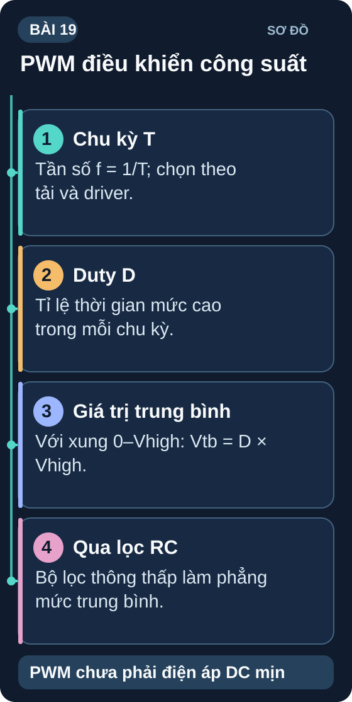
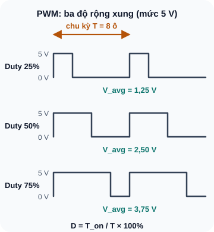
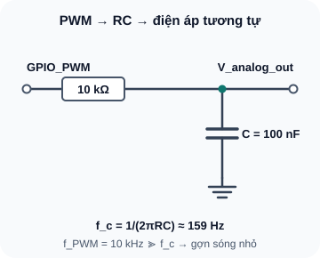

PWM — Điều Rộng Xung & Điều Khiển Tốc Độ
Kỹ thuật mô phỏng điện áp analog bằng xung số — điều khiển độ sáng LED, tốc độ motor và truyền thông servo.
- Hiểu PWM là gì — biến đổi tín hiệu số thành giá trị trung bình thay đổi được
- Hiểu Duty Cycle (%) và tần số (Hz) — hai tham số quan trọng nhất
- Tính điện áp trung bình từ duty cycle: V_avg = D × V_high
- Biết lựa chọn tần số PWM phù hợp: LED, motor, servo
- Thực hành: dimmer LED bằng Arduino/ESP32 analogWrite
- Phân tích PWM motor DC và chọn MOSFET theo điện áp Gate, dòng tải cùng nhiệt của mạch thật
- Hiểu tại sao cần tần số PWM phù hợp với motor (không nghe tiếng kêu)
- Mô phỏng điện áp analog bằng PWM + RC filter

1. PWM — Điều Rộng Xung (Pulse Width Modulation)
PWM là kỹ thuật thay đổi độ rộng (thời gian) của xung điện trong một chu kỳ cố định để điều khiển giá trị điện áp trung bình đến tải. Thay vì thay đổi điện áp một cách liên tục (như DAC analog), PWM chuyển đổi nhanh giữa 0V và V_max — tải "cảm nhận" điện áp trung bình tương ứng.

Đọc mô tả D19-1
Ba dạng sóng vuông cùng chu kỳ T = 8 ô thời gian. Duty 25% có điện áp trung bình 1,25 V, duty 50% có 2,50 V, duty 75% có 3,75 V ở mức 5 V.
2. Chọn tần số PWM phù hợp
| Ứng dụng | Tần số PWM khuyến nghị | Lý do |
|---|---|---|
| LED dimming | 500Hz–10kHz | Trên 50Hz: mắt không nhận ra nhấp nháy (flicker-free) |
| Motor DC nhỏ | 1kHz–20kHz | Trên 20kHz: motor không kêu (ngưỡng nghe của người) |
| Servo RC | 50Hz (chu kỳ 20ms) | Tiêu chuẩn servo: T_on = 1ms–2ms điều khiển góc |
| DC-DC Converter | 100kHz–2MHz | Tần số cao → cuộn cảm và tụ nhỏ hơn |
| Audio class D amplifier | 200kHz–500kHz | Trên 10× tần số âm thanh max (20kHz) |
- ESP32: LEDC peripheral — 16 kênh, tần số từ 1Hz đến 40MHz, độ phân giải 1–16 bit. Dùng
ledcWrite(channel, duty) - Arduino Uno/Nano:
analogWrite(pin, 0–255)— tần số 490Hz (pin 3,9,10,11) hoặc 980Hz (pin 5,6). Phân giải 8-bit. - Arduino Mega: Tương tự nhưng có thêm pin PWM trên Timer 3,4,5
3. PWM → Điện áp Analog: RC Low-Pass Filter
Nếu bạn cần điện áp analog thực sự (ví dụ: DAC cho âm thanh, điện áp tham chiếu biến đổi), có thể dùng RC Low-Pass Filter sau ngõ ra PWM để lọc bỏ thành phần tần số cao, chỉ giữ lại giá trị trung bình DC:

Đọc mô tả D19-2
Chân GPIO_PWM qua R = 10 kΩ tới nút V_analog_out; tụ C = 100 nF nối từ nút đó xuống GND. Tần số PWM 10 kHz lớn hơn nhiều tần số cắt khoảng 159 Hz nên gợn sóng bị lọc.
4. Thực hành: Dimmer LED và điều khiển tốc độ motor
// Dimmer LED — Arduino
const int LED_PIN = 9; // Pin PWM
void setup() { pinMode(LED_PIN, OUTPUT); }
void loop() {
// Tăng dần sáng
for (int d = 0; d <= 255; d++) {
analogWrite(LED_PIN, d);
delay(10);
}
// Giảm dần tối
for (int d = 255; d >= 0; d--) {
analogWrite(LED_PIN, d);
delay(10);
}
}
Nối LED + R(220Ω) vào pin 9 Arduino. Upload code trên. Quan sát LED breathing.
Đo điện áp trung bình tại chân PWM so với GND khi cố định
analogWrite(LED_PIN, 128): kỳ vọng gần 2,5V. Điện áp đo trực tiếp hai đầu LED không bằng điện áp trung bình chân PWM vì LED là tải phi tuyến.Thay pin 9 bằng pin 5 hoặc 6 (490Hz→980Hz): có thấy sự khác biệt không?
Trên sơ đồ của Bài 18, thay mức Gate cố định bằng PWM qua R_G=100Ω. IRLZ44N chỉ dùng để phân tích: datasheet Infineon IRLZ44N không bảo đảm R_DS(on) tại V_GS=3,3V. Với mạch thật, chọn đúng MOSFET có R_DS(on) bảo đảm ở điện áp Gate thực tế hoặc driver Gate phù hợp; kiểm dòng kẹt trục, diode, nguồn và nhiệt trước khi cấp điện.
Với Arduino Uno, xét
analogWrite(PWM_PIN, 64/128/255)tương ứng khoảng 25%/50%/100% duty. Dự đoán điện áp trung bình; tốc độ motor không nhất thiết tỉ lệ tuyến tính với duty.Nếu có mô hình motor, so sánh đáp ứng ở PWM khoảng 490Hz và 20kHz; tiếng kêu và tốc độ thực tế chỉ được kết luận bằng phép đo trên motor đã xác định.
Ví dụ mã Arduino-ESP32 core 3.x:
ledcAttach(PWM_PIN, 20000, 8)rồiledcWrite(PWM_PIN, 128)cho duty khoảng 50%. Không nối IRLZ44N trực tiếp vào GPIO ESP32 3,3V chỉ vì mã PWM chạy được; thực hành phần cứng phải vượt điều kiện chọn Gate, dòng và nhiệt ở bước đầu.
1: D=0,6. V_avg = 0,6 × 5V = 3V. V_rms = 5 × √0,6 = 5 × 0,775 = 3,873V
2: D = 1,5ms / 20ms = 7,5%. f_PWM = 1/20ms = 50Hz
3: Cần f_c < 49 Hz. Chọn C=1 µF: R=1/(2π×49×0,000001)≈3,25 kΩ. Chọn 3,3 kΩ cho f_c≈48,2 Hz theo giá trị danh định; tính lại với dung sai R/C.
4: D=200/255≈0,784 và điện áp trung bình của xung là 0,784×5≈3,92 V. LED là phần tử phi tuyến, nên không lấy 3,92 V trừ 2 V để tính dòng. Khi HIGH, I_on≈(5−2)/220=13,6 mA; khi LOW, gần 0; trung bình thời gian ≈D×I_on=10,7 mA trong mô hình V_LED≈2 V. Kiểm dòng đỉnh, giới hạn chân và LED trên board thật.